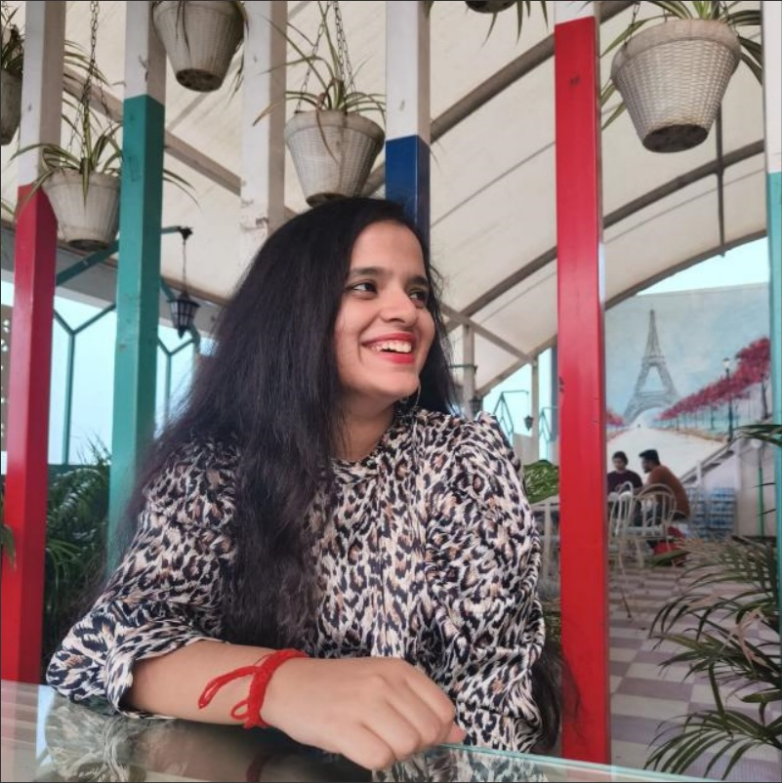
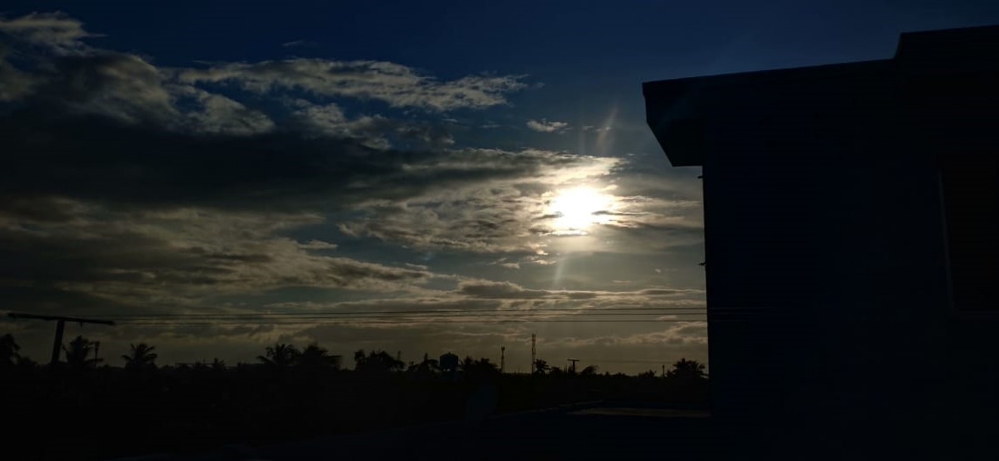
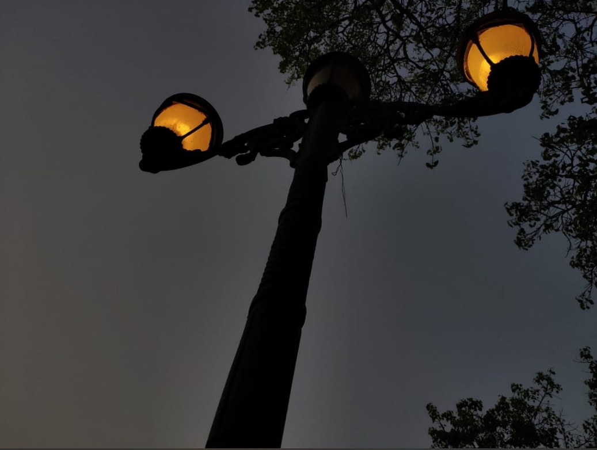
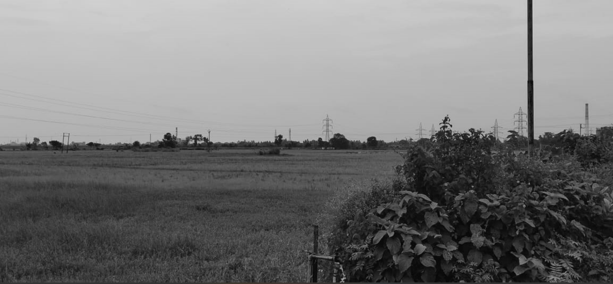
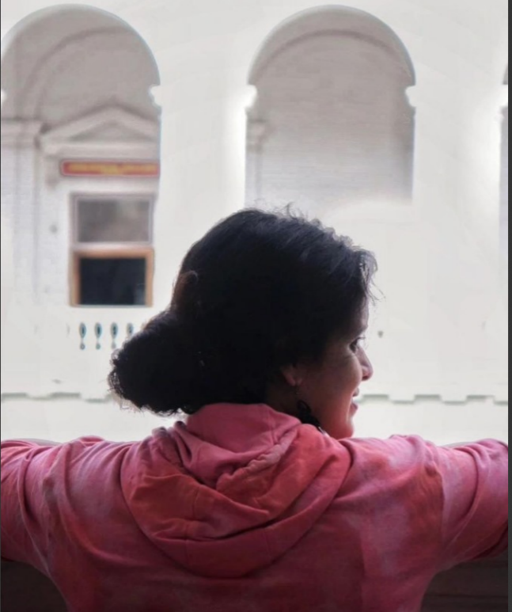
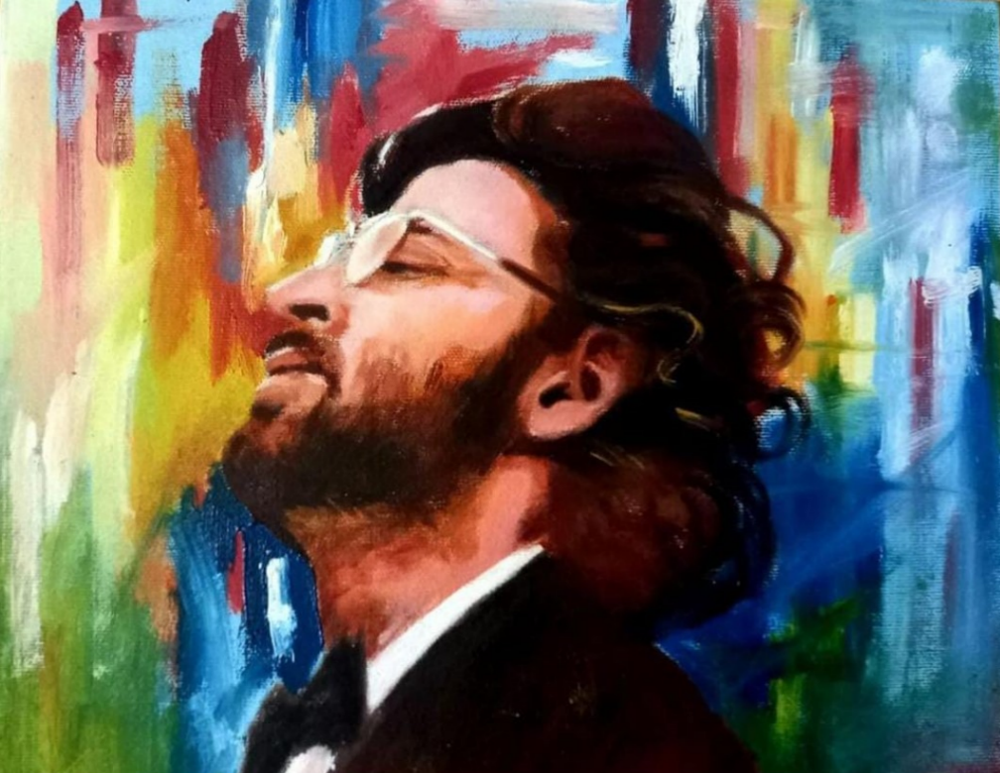
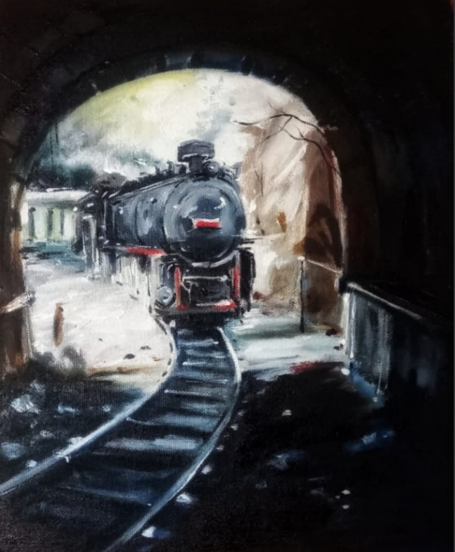

About Me

Hello everyone, Tanisha Mukherjee. I'm a sophomore at Kalinga Institute of Industrial Technology pursuing
my bachelors in Computer Science Engineering. I am a front-end web developer and can write clean code with good
design. I have demonstrated experience with JAVA and C . Currently I'm interested in Cyber Security and am actively trying to integrate it to my workflow. I also love
photography , dancing , drawing and listening to music. Scroll down to know more about me and have a lovely time!.
Projects
Portfolio Website
- Description: A portfolio website built entirly on HTML.
- Language(s): HTML
Work Experience
- Responsible for hosting and management of college events.
- Responsible for getting sponsorships for all types of college events.
Skills
- Technical Skills :C, HTML, CSS, JAVA,Microsoft Office, Data Analysis, Photography, Video Editing.
- Soft Skills : Leadership, Teamwork, Communication, Time Management, Problem Solving, Adaptability, Flexibility, Marketing
Photography




My drawing


Education
2022 - 2026 : Kalinga Institute of Industrial Technology (UGC)
- B.Tech in Computer Science Engineering
2022 - 2020 : Pearls Of God (I.C.S.E)
- Subjects : Physics, Chemistry, Mathematics, English, Computer
2020 - 2009 : Agrasain Balika Siksha Sadan School (I.C.S.E)
- Subjects : Science, Mathematics, English, Bengali, History, Geography
Awards and Achievement
Oct 2014 - ALOHA(Abacus) Third runner-up at State Level at Brahmapur, Odisha
Oct 2014 - ALOHA(Abacus) Second runner-up at National Level in Chennai
Oct 2013 - ALOHA(Abacus)Winner, 4th State Level Champion in Aloha at Brahampur, Odisha.
Completed 7 th year in Drawing from Uttar Kolkata Charukala Society approved and appreciated by Rabindra Bharati University.
Completed 6 th year in Fabric from Uttar Kolkata Charukala Society approved and appreciated by Rabindra Bharati University.
Completed 5 th year in Craft from Uttar Kolkata Charukala Society approved and appreciated by Rabindra Bharati University.
Achieved 1st and 3rd position in Drawing Competition conducted by Oikatan Cultural Academy.
Contact Me
- Phone Number: 6291590558
- Email Address: mukherjeetanisha2003@gmail.com
- Address:
Socials